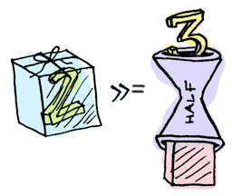

Développement Web en OCaml
Guillaume Huysmans, 2017
UMONS, Département d'informatique
Scripting
-
Vitesse(délai réseau >> temps de génération) -
Typage dynamique
- « Moins à écrire qu'en Java, même résultat »
- Pas d'exécution (pas de test), pas d'erreur...
-
Retour vers du typage statique avec TypeScript
- À nouveau trop à écrire (bibliothèques...) !
À éviter
-
Débogage complexe, erreurs « prévisibles » :
TypeError: null has no properties - Constante qui change, formule incorrecte
Objectifs
Prouver automatiquement certaines propriétés !
- Cohérence formulaires/données
-
Gestion d'erreurs
-
sans
nullpotentiellement inattendu - exhaustive (checked exceptions ?)
- non intrusive : isolation lib/Web
-
sans
-
Pages valides W3C :
- Rendu plus cohérent
- Accessibilité
OCaml
Typage
- statique : fait à la compilation, rien à l'exécution
- fort : pas de conversions implicites, 2 + 4.0 = erreur
-
inféré
- Il n'est pas nécessaire d'écrire tous les types.
- Polymorphisme paramétrique !
Types monomorphes
intstringfloat -> int
Types paramétriques
-
α list(liste chaînée d'α), par ex.[1; 2; 3] -
α option-
Soit rien :
None(de typeα option) -
Soit une valeur :
Some 2(de typeint option)
-
Soit rien :
-
[< `OK | `Not_found]: variant polymorphe-
Sous-type de
[`OK | `Not_found] -
`OK,`Not_foundou un des deux
-
Sous-type de
Tyxml
(* tyxml.mli simplifié *)
type 'a elt
val table :
(* ... *)
?columns: [< `Colgroup] elt list ->
[< `Tr] elt list ->
[> `Table] elt
(* utilisation *)
type t = {name: string; age: int}
let to_row x = tr [
td [pcdata x.name];
td [pcdata (string_of_int x.age)]
]
let to_table l = table (List.map to_row l)
Exemple d'erreur
let view l = [p ["Members:"; br (); to_table l]]
Error: This expression has type
([> Html_types.table ] as 'a) Tyxml.Html.elt = 'a Tyxml_html.elt
but an expression was expected of type
([< Html_types.p_content_fun ] as 'b) Tyxml.Html.elt =
'b Tyxml_html.elt
Type 'a = [> `Table ] is not compatible with type
'b =
[< `A of Html_types.phrasing_without_interactive
| `Abbr
... ]
The second variant type does not allow tag(s) `Table
Module
Un module regroupe :
- des types
- des fonctions
- des sous-modules
- des foncteurs (« fonctions pour modules »)
Une interface (ensemble de signatures) permet de restreindre les types (par abstraction).
Exemple : id
Rendre explicite toute conversion int ↔ id.
(* id.mli *)
type t (* abstrait, opaque *)
val make: int -> t
val to_int: t -> int
(* id.ml *)
type t = int
let make n = n
let to_int n = n
En dehors d'id.ml,
t est opaque, donc t≠int.
Concurrence
Un processus/thread est plus léger que plusieurs.
En Node.js, asynchrone \(\implies\) callback.
Dans un serveur avec plusieurs clients, un gestionnaire de requêtes qui attend ne doit pas bloquer les autres.
Problèmes
-
try/catchne fonctionne plus - Imbrication trop importante (syntaxe)
Monade
-
return: \(\alpha \rightarrow \alpha m\) -
>>=(bind) : \(\alpha m \rightarrow \left(\alpha \rightarrow \beta m\right) \rightarrow \beta m\)
return |
bind |
|
 |
 |
 |
| source : Aditya Bhargava | ||
Promesse
Valeur accessible plus tard, transformée avec bind.
Elle est « emballée » :
int -> int t
Le calcul progresse au fil de ces transformations.
Exemple
(* sans Lwt *)
let f title =
let s = read_book title in
let fr = translate ~dest:"fr" s in
let v = Views.book title fr in
resp_ok v
(* avec Lwt *)
let f title =
read_book title
>>= translate ~dest:"fr"
>>= Views.book title
>>= resp_ok
Erreurs
Avec des variants polymorphes, les erreurs possibles seront accumulées dans le type.
Le combinateur >>> transmet les erreurs
et >>! transforme ces erreurs (en pages, ici).
Exemple amélioré
let f title =
read_book title (* (string, [< `NF]) t *)
>>> translate ~dest:"fr" (* (string, [< `NF, `CT] t *)
>>> Views.translation (* (doc, [< `NF, `CT] t *)
>>! handle_errors (* (doc, [< `Redir of string] t *)
Formulaires
Le type des champs affichés doit correspondre à celui des valeurs attendues par le programme.
type t = {name: string; age: int option}
let form ?(t = {name = ""; age = None}) () =
form `Post [
h2 [pcdata "Form"];
label "Name: " (make_string "name" t.name |> input);
label "Age: " (make_int_o "age" t.age |> input);
button [pcdata "Submit"];
]
let read data =
read data "name" |> required |> get >>> fun name ->
read data "age" |> to_int |> get >>> fun age ->
return {name; age} (* (t, [< `NaN | `Required]) Error.t *)
Conclusion
- Les objectifs de fiabilité décrits au début sont atteignables grâce au typage d'OCaml; les variants polymorphes et les GADT sont très utiles même si on ne les retrouve pas dans beaucoup de langages.
- « Statiquement typé » n'est pas synonyme de « verbeux » : les types peuvent être inférés.
Aller plus loin
-
Lien typé :
- Valeur : URI
- Paramètre de type : type des paramètres
- Utilisé pour le routage et le rendu
- js_of_ocaml compile du OCaml en JavaScript
Merci !
Des questions ?
Cette présentation est sur GitHub :
https://ghuysmans.github.io/web-ocaml/
Les bibliothèques décrites, aussi !
https://github.com/ghuysmans/web-ocaml
Le site officiel d'OCaml propose un bon tutoriel :
http://ocaml.org/